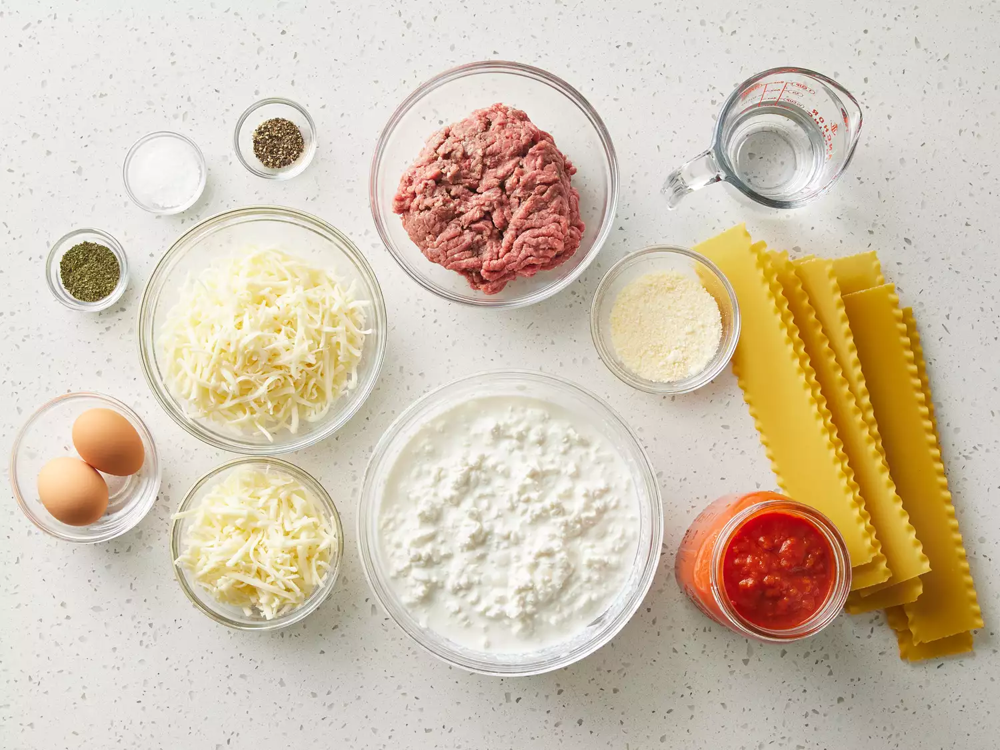
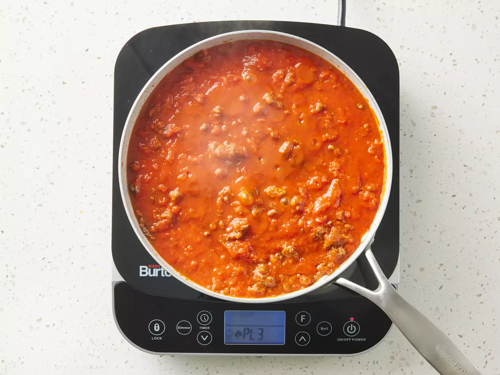
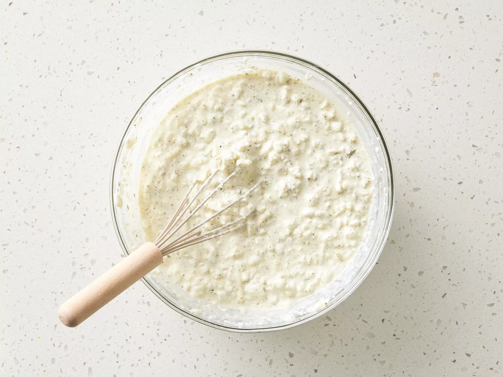
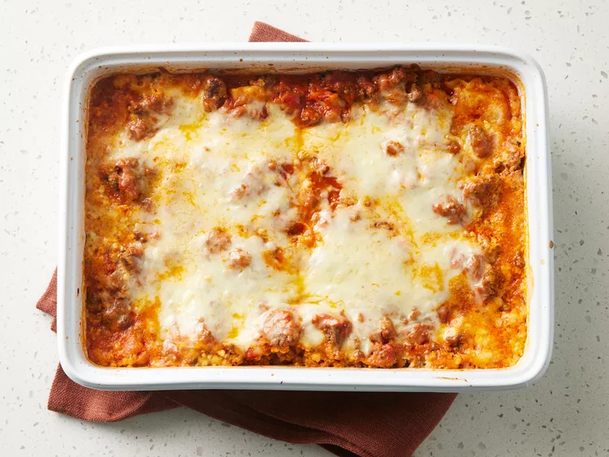

Lasagna
A simple lasagna is a baked Italian casserole made with flat pasta sheets, savory meat tomato sauce, and melted cheese. It features repeating layers baked until bubbly and warm.

Prep Time: 10 mins
Cook Time: 1 hr 10 mins
Additional Time: 10 mins
Servings: 12
Making perfect homemade lasagna doesn’t have to be tedious. This top-rated easy lasagna recipe comes together quickly with a relatively short ingredient list.
Easy Lasagna Ingredients
These are the ingredients you’ll need to make this easy lasagna recipe:
- Beef: This easy lasagna starts with ground beef. You can use ground turkey for a lighter option.
- Spaghetti sauce: Use store-bought or homemade spaghetti sauce.
- Cheese: You’ll need cottage cheese, mozzarella, and Parmesan.
- Eggs: Eggs help bind the cheese mixture together. Plus, they lend moisture and richness.
- Seasonings: Season the easy lasagna with dried parsley, salt, and black pepper.
- Lasagna Noodles: Of course, you’ll need lasagna noodles!
- Water: Of Pour ½ cup of water around the edges of the baking dish before baking.
Ingredients
- 1 pound lean ground beef
- 1 (32 ounce) jar spaghetti sauce
- 3 cups shredded mozzarella cheese, divided
- 2 eggs
- ½ cup grated Parmesan cheese
- 2 teaspoons dried parsley
- salt to taste
- 9 lasagna noodles
- ½ cup water
Directions
- Gather all ingredients and preheat the oven to 350 degrees F (175 degrees C).

- Heat a large skillet over medium-high heat. Cook and stir ground beef in the hot skillet until browned and crumbly, 8 to 10 minutes. Drain and discard grease. Stir in spaghetti sauce and simmer for 5 minutes

- Combine cottage cheese, 2 cups of mozzarella cheese, eggs, 1/2 of the grated Parmesan cheese, dried parsley, salt, and pepper in a large bowl.

- Spread 3/4 cup of sauce in a 9x13-inch baking dish. Cover with 3 uncooked lasagna noodles, 1 3/4 cups of cheese mixture, and 1/4 cup sauce; repeat layers once more. Top with remaining 3 noodles, sauce, mozzarella, and Parmesan cheese. Pour 1/2 cup water along the edges of the dish. Cover tightly with aluminum foil.

- Bake in the preheated oven for 45 minutes. Uncover and bake for an additional 10 minutes. Let stand 10 minutes before serving.

- Serve and enjoy!